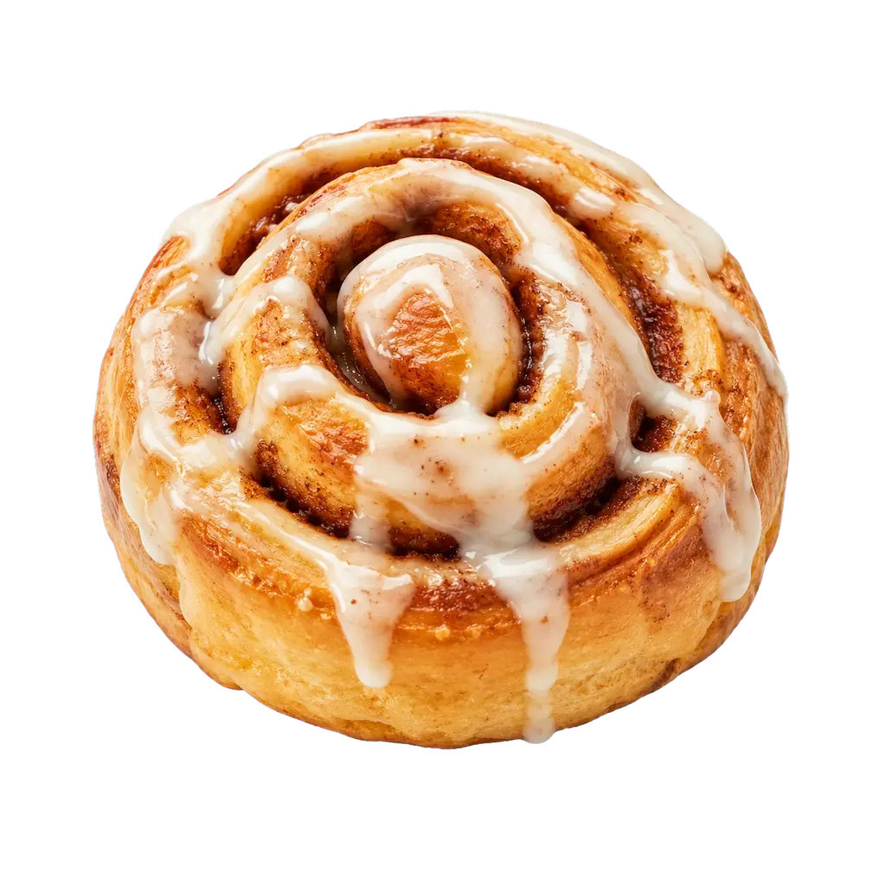

Cinnamon Roll
Tiempo: 1 hora 45 minutos · Dificultad: Intermedia · Porciones: 9 rollos

Preparación
- Disuelve la levadura y 1 cucharadita de azúcar en la leche tibia. Deja reposar durante 10 minutos hasta que espume.
- En un tazón grande, integra el resto del azúcar, la mantequilla derretida, los huevos y la mezcla de levadura.
- Añade la harina gradualmente y amasa durante 8 a 10 minutos hasta obtener una masa suave y elástica. Deja leudar tapada durante 1 hora.
- Estira la masa con un rodillo en un rectángulo de unos 40x30 cm. Pincela con la mantequilla suave y espolvorea uniformemente el azúcar moreno mezclado con la canela.
- Enrolla firmemente comenzando por el lado largo y corta el cilindro en 9 rollos iguales.
- Coloca los rollos en un molde cuadrado engrasado, tapa y deja levar durante 30 minutos más.
- Hornea a 180°C (350°F) durante 20 a 25 minutos hasta que estén dorados.
- Mezcla los ingredientes del glaseado y esparce generosamente sobre los rollos aún tibios.
¡Esponjosos, tibios y con un glaseado cremosisimo irresistible!
Tips de nuestra comunidad
Descubre recetas, combinaciones y secretos compartidos por otros amantes de la cocina. ¿Tienes un secreto de cocina?
Compártelo con la comunidad.
Usa hilo dental sin sabor para cortar el rollo de masa; evitará que se aplasten y mantendrán su forma circular perfecta.
Vierte 2 cucharadas de crema de leche tibia sobre los rollos justo antes de meterlos al horno; quedarán súper ultrasuaves.